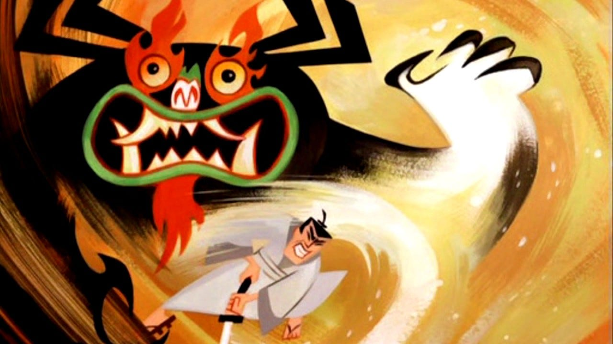

About Samurai Jack
Samurai Jack is very cool he is very strong and a very good fighter
Samurai Jack and his biggest enemy Aku
Samurai Jack's Characteristics
- He has a big samurai sword
- He has travelled the whole world
- He has trained very hard to save the world
Samurai Jack's friends
Samurai Jack probably has some friends, but I do not know much about them. Click on the links below to learn more about them: